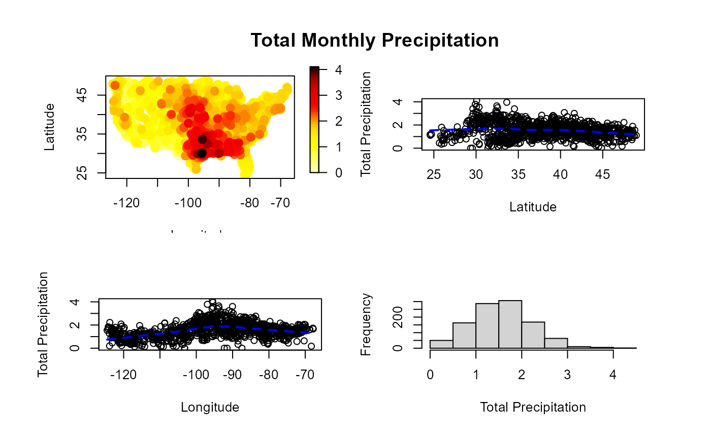

The data set consists of total precipitations during March 2016 recorded over 1053 locations on the continental part of USA.
A SpatialPointsDataFrame with 1053 observations on the
following 6 variables:
total precipitations (square-root of rainfall inches),
five-digit Weather station identifier,
factor containing the U.S. state,
and the following attributes:
list with data and variable labels,
SpatialPolygons with the boundary
of the continental part of USA,
SpatialPolygons with the U.S. state boundaries.
National Climatic Data Center:
https://www.ncdc.noaa.gov/cdo-web/datasets.
Fernandez-Casal R., Castillo-Paez S. and Francisco-Fernandez M. (2017) Nonparametric geostatistical risk mapping, Stoch. Environ. Res. Ris. Assess., doi:10.1007/s00477-017-1407-y .
Fernandez-Casal R., Castillo-Paez S. and Garcia-Soidan P. (2017) Nonparametric estimation of the small-scale variability of heteroscedastic spatial processes, Spa. Sta., doi:10.1016/j.spasta.2017.04.001 .
summary(precipitation)
#> Length Class Mode
#> 1053 SpatialPointsDataFrame S4
scattersplot(precipitation)
